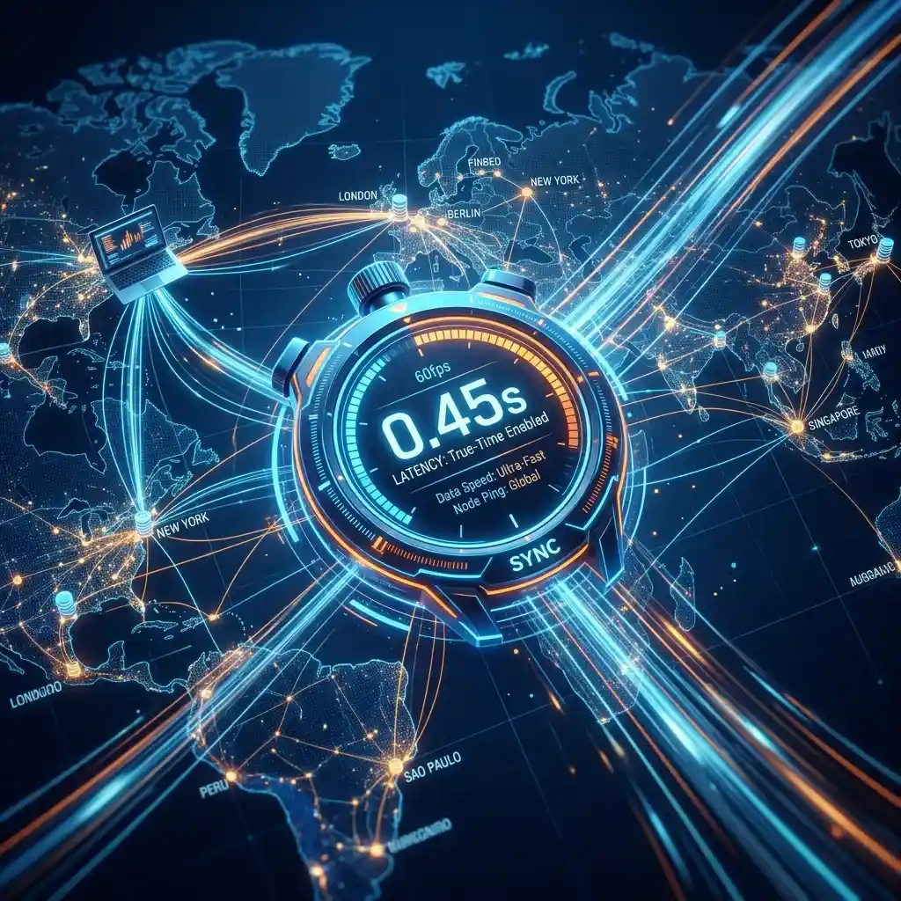

Solving Playback Latency: Technical Deep Dive

In today's fast-paced digital landscape, the concept of "Latency"—the delay between a data source and its visual representation—has become the "Silent Killer" of professional intelligence.
Whether you are a market analyst tracking a high-velocity flash crash, a competitive gamer monitoring a global tournament, or a corporate strategist witnessing a viral brand crisis, your ability to witness events in "True Time" is your ultimate competitive edge. The "Information Gap" is no longer measured in minutes, but in sub-second intervals. To achieve efficient multitasking across 100 simultaneous video streams, you must move beyond the "Default Settings" and into the realm of "High-Performance Engineering." This guide explores the technical science of playback latency and examines how you can optimize your ecosystem for zero-stutter, high-density monitoring. Success today is about the physics of your truth. Total multitasking efficiency starts with the elimination of the lag.
Low-Latency Protocols (LL-HLS, WebRTC, and DASH): The Streaming Landscape
To understand latency, you must understand the "Pipe" that delivers the data. Today, the streaming landscape is dominated by three primary low-latency protocols: LL-HLS (Low Latency HTTP Live Streaming), WebRTC (Web Real-Time Communication), and Low-Latency DASH. Each protocol has its own "Latency Floor"—the absolute minimum delay it can achieve based on its chunking and buffering architecture. While a standard 2022 stream might have a 15-30 second delay, modern "Ultra-Low Latency" protocols aim for sub-2-second or even sub-500ms delivery. This is the difference between "Watching the News" and "Witnessing the Event."
For a professional grid (monitored with high-performance tools like YoutubeMulti), using a protocol that supports "Micro-Chunking" is essential. This allows the video player to begin rendering parts of a data segment before the entire segment has been downloaded. WebRTC is frequently the preferred choice for real-time interactive dashboards because it eliminates the "TCP Overhead" and allows for direct Peer-to-Peer communication with the source server. However, for mass-reach broadcasts, LL-HLS provides the best balance of low-latency and global distribution stability. Understanding which protocol your favorite sources use allows you to calibrate your monitoring dashboard for "Target Sync." Technical awareness is the first step toward visual clarity.
Hardware Acceleration and Browser Engine Optimization: Reducing Local Lag
Even if the stream arrives in sub-second time from the server, "Local Latency"—the delay introduced by your own browser and hardware—can still destroy your performance. When you are rendering 100 simultaneous high-definition streams, your CPU and GPU become the primary bottlenecks. Today, "Hardware Acceleration" is no longer optional; it is a technical requirement. The browser engine must be able to offload the heavy "Decoding and Rendering" tasks to the GPU (Graphics Processing Unit) to prevent "UI Freezing" and "Frame Skipping."
To optimize your local lag, you must ensure your browser's "Media Engine" is configured for high-density playback. This involves enabling "Experimental Web APIs" that support multi-threaded video decoding and ensuring your GPU drivers are optimized for real-time video processing. Additionally, using a tool that utilizes "Native Chromium Optimization" (like YoutubeMulti) ensures that your grid remains stable even as you push the limits of your hardware. By reducing the mental effort required to recalibrate your eyes for "stuttering frames," you protect your focus for higher-level decision-making. High-performance monitoring requires high-performance hardware. Total multitasking efficiency is a byproduct of pure technical stability.
The Impact of Network Jitter on Multi-Stream Sync: Solving the Drift Problem
One of the "Unseen Enemies" of the 100-video grid is "Network Jitter"—the variance in the arrival time of data packets. When you are monitoring dozens of streams, even a small amount of jitter can cause "Drift," where some videos play slightly ahead of others. This "Temporal Chaos" makes it impossible to build a cohesive narrative from multiple sources. If the "Breaking News" portal on Tile 1 is 3 seconds ahead of the "Live Sentiment Dashboard" on Tile 2, your brain will struggle to connect the two events instinctively.
Solving the "Drift Problem" involves using advanced "Synchronization Buffers." Modern video players (configured for high-velocity monitoring) use a "Master-Slave" logic to ensure that all tiles in the grid remain aligned with a single "Global Reference Clock." This process involves sub-second "Re-Buffering" and "Dynamic Playback Rate Adjustment" (speeding up or slowing down a video by a tiny percentage to bring it back into sync). For a professional analyst, this "Perfect Alignment" is non-negotiable. YoutubeMulti ensures that your grid remains a "Cohesive Intelligence Space," rather than a collection of disparate, drifting data points. Success in 2026 is about the synchronization of your reality. Total multitasking efficiency is the result of focused, unified monitoring.
Designing for 'Sub-Second Awareness': Technical Benchmarks for 2026
What constitutes "Low Latency" today? The benchmarks have shifted significantly. For "Passive Entertainment," a 5-second delay is acceptable. For "Strategic Intelligence," anything above 2 seconds is considered a risk. For "High-Velocity Trading or Gaming," the goal is sub-500ms. These technical benchmarks are the "Performance Specs" of your monitoring environment. To achieve "Total Situational Awareness," you must constantly monitor your own "Latency Budget" and identify the bottlenecks in your pipeline.
Use "Latency Detection Tools." Professional-grade dashboards should include built-in "Latency Indicators" for every tile, showing the exact offset from the live edge. This allows you to immediately identify if a specific source is falling behind due to network congestion or server-side lag. By being aware of your "Temporal Position," you can adjust your decision-making risk accordingly. If you know Tile 1 is 3 seconds behind the real-world, you won't make a split-second market decision based on its visuals. Awareness of the "Delay" is a form of intelligence in itself. Modern success is about knowing the exact "Refresh Rate" of your truth. Total multitasking efficiency is the only path to high-stakes victory.
Future Outlook: Edge Computing and Decentralized Video Distribution
As we look toward 2027 and beyond, the future of low-latency video is undeniably data-driven and highly decentralized. We are moving toward a world of "Edge Video Delivery," where the streaming servers are located as close to the user as possible to reduce the physical distance data must travel. Future dashboards will likely include built-in "AI Traffic Routing," real-time "Network Optimization" overlays, and seamless integration with global reputation-integrity databases. YoutubeMulti is already providing the foundation for this high-tech future, allowing you to build your own bespoke "Strategic Intelligence Grid" today.
Using YoutubeMulti's High-Performance Engine to Achieve Zero-Stutter Playback
For the technical specialist, having efficient multitasking of their monitoring pipeline is non-negotiable. Using YoutubeMulti to build an "Operations Control Center" allows you to:
- Tile 1-10: The High-Velocity Radars: Ultra-low-latency streams positioned in the "Focal Center" for immediate reaction.
- Tile 11-50: The Strategic Intelligence: Medium-latency streams for contextual background and deep sentiment analysis.
- Tile 51-100: The Historical Archive: Low-priority tiles for monitoring long-term trends and "Slow-Burn" news stories.
- Real-Time Sync Check: Use the unified controls to "Resync All" with a single click if network jitter causes a drift in the grid.
- Hardware Monitor: Keep an eye on your GPU/CPU load to ensure your 100-video grid remains in the "Zero-Stutter Zone."
Conclusion: Final Thoughts on the Technical Standard
The 2026 world of low-latency monitoring is a rewarding but demanding landscape of data, sentiment, and engineering. It is no longer enough to just "watch" content—you must "engineer" your reality. By utilizing advanced protocol optimization and professional tools like YoutubeMulti, you can ensure that you are always at the center of the intelligence curve. Don't just watch—focus, analyze, and build your productivity workflow in the multi-stream future. The era of total semantic awareness has arrived.